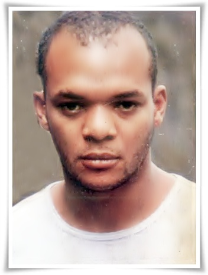

Biografia
Renato Rocha
O contrabaixista e compositor Renato da Silva Rocha (também conhecido como Negrete ou Billy) nasceu em 27 de maio de 1961 em São Cristóvão, no Rio de Janeiro. Nos anos 70 foi morar em Brasília, por conta de uma transferência do pai militar. Passou a ter contato com as bandas da capital e em seguida começou a andar com a turma que admirava o movimento punk inglês.
Nessa mesma época, através de alguns amigos, Renato Rocha conheceu Andre Pretórius, Renato Russo e Fê Lemos. O baixista ficou amigo dos músicos do Aborto Elétrico e de todas as bandas da cena brasiliense.
Sua primeira banda foi a Gestapo – formada também por Lulu Gouveia e pelo vocalista Judas. Depois, formou com o guitarrista Toninho Maia a banda Hosbond Kama. Mas em 1981 entrou para a banda Dents Kents, composta por Fred (Vocal); Ameba (Bateria – o Jander, da Plebe Rude) e Feijão (Guitarra). Em 1984 o amigo Marcelo Bonfá o chamou para integrar a Legião Urbana – e ele compôs Quase Sem Querer e Daniel na Cova dos Leões com Renato Russo. Ficou na Legião até 1989. Depois da Legião Urbana, Renato Rocha integrou as bandas Cartilage, Finis Africae e Solana Star. Após anos, Billy foi convidado a fazer uma participação no álbum Uma Outra Estação, tocando contrabaixo na faixa Riding Song.
Foi encontrado morando na rua, no Rio, em 2012. Aceitou fazer um tratamento numa clínica, com o apoio de familiares, amigos e fãs.
No concerto Renato Russo Sinfônico, realizado em Brasília, em junho de 2013, para lembrar sua memória através de um holograma, Renato Rocha fez uma participação especial tocando contrabaixo e cantando em Que País é Este e, ao lado de todos os convidados, cantou em Será.